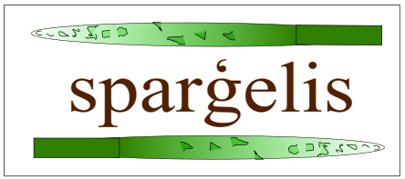

Vektorgrafika: Inkscape
Datorikas stundās mēs apguvām vektorgrafikas pamatus, izmantojot programmu Inkscape. Šeit es veidoju dažādus dizainus un ilustrācijas, apgūstot rīkus, kas ļauj zīmēt precīzas līnijas, mainīt objektu formas, krāsas un strādāt ar slāņiem. Vektorgrafikas lielākā priekšrocība ir tā, ka attēlus var palielināt bez kvalitātes zuduma.
